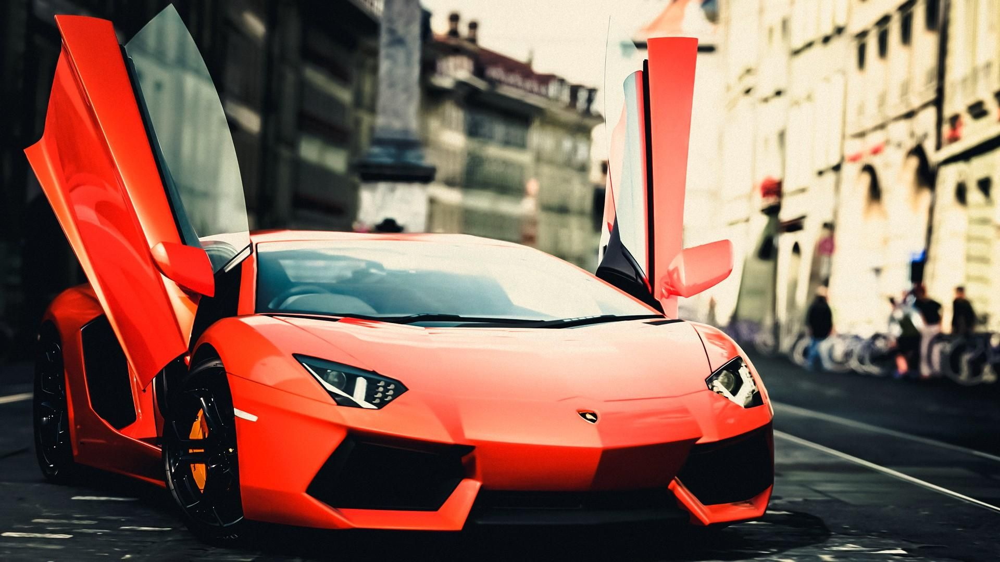

Lamborghini
La Lamborghini è un'azienda italiana produttrice di automobili di lusso, interamente posseduta dalla tedesca Audi. Fondata nel 1963 da Ferruccio Lamborghini già fondatore della Lamborghini Trattori, la sede e l'unico stabilimento produttivo sono da sempre situati a Sant'Agata Bolognese, dove lavorano oltre 1.400 dipendenti. Il toro alla carica incorniciato da uno scudetto fu scelto come emblema da Ferruccio Lamborghini poiché era il suo segno zodiacale. Dopo i primi modelli con denominazione alfanumerica in voga all'epoca, anche la nomenclatura delle auto si ispirò al mondo della tauromachia: il nome Miura venne preso dalla razza di tori da corrida di Don Eduardo Miura Fernandez, di cui Lamborghini visitò anche l'allevamento a Siviglia. Islero era il nome del toro (di razza Miura) che uccise il famoso torero Manolete nel 1947. Espada è la traduzione spagnola di spada, l'arma usata per infliggere il colpo fatale ai tori. Jarama faceva riferimento alla storica regione spagnola in cui la tauromachia era particolarmente diffusa. Anche Urraco era una prestigiosa razza taurina. Diablo era il nome del feroce animale del duca di Veragua che affrontò un'epica corrida con "El Chicorro" a Madrid nel 1869. Murciélago era il leggendario toro la cui vita fu risparmiata da "El Lagartijo" nel 1879; Gallardo prende il nome da una delle cinque caste ancestrali delle razze da corrida spagnole. Reventón, il toro che ha sconfitto il giovane torero messicano Félix Guzmán nel 1943. Estoque, è ispirato dall’estoc (stocco), la spada usata tradizionalmente dai matador. Aventador, infine, era il nome del toro che nel 1993 a Saragozza vinse il Trofeo de la Peña| modello | n. modelli venduti | anno statistiche |
|---|---|---|
| gallardo | 2300 | 2017 |
| urus | 3130 | 2017 |
| aventador sv | 890 | 2017 |
| forsennato | 150 | 2017 |
| huracan | 753 | 2017 |